Albert Einstein
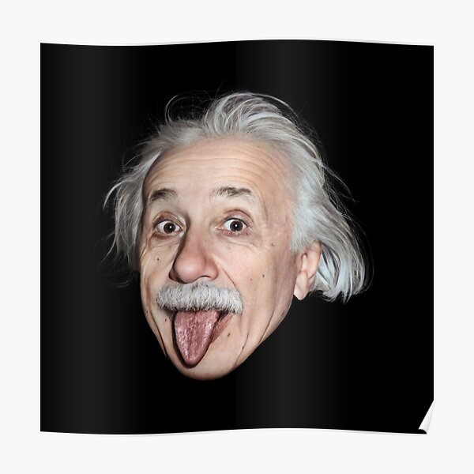
About Me
Albert Einsteinwidely acknowledged to be one of the greatest and most influential physicists of all time. Einstein is best known for developing the theory of relativity, but he also made important contributions to the development of the theory of quantum mechanics. Relativity and quantum mechanics are the two pillars of modern physics. His mass–energy equivalence formula E = mc2, which arises from relativity theory, has been dubbed "the world's most famous equation". His work is also known for its influence on the philosophy of science. He received the 1921 Nobel Prize in Physics "for his services to theoretical physics, and especially for his discovery of the law of the photoelectric effect", a pivotal step in the development of quantum theory. His intellectual achievements and originality resulted in "Einstein" becoming synonymous with "genius". Einsteinium, one of the synthetic elements in the periodic table, was named in his honor.[14]
Experiences
Childhood: Einstein was born in Germany in 1879 and showed an early interest in mathematics and science as a child. He struggled in school and was regarded as a slow learner. After finishing school, Einstein went to work at the Swiss Patent Office in Bern. During this time, he began developing his theories of relativity, which led to his seminal work on the subject. Einstein's theory of special relativity was published in 1905, and his theory of general relativity was published in 1915. These theories fundamentally altered scientists' understanding of space, time, and gravity. Nobel Prize: Einstein received the Nobel Prize in Physics in 1921 for his work on the photoelectric effect. Einstein was a political activist.
Hobbies
Albert liked doing puzzles, reading books about nature, and playing violin. He was fascinated by the invisible magnetic force that makes compasses work. And he was very curious about math. I used to sit and play the violin for hours while he went bird watching. Einstein enjoyed traveling and visited many countries throughout his life. He enjoyed visiting Japan and the United States in particular. Reading: Einstein was an avid reader who devoured books on a wide range of topics. He had a strong interest in philosophy, physics, and mathematics. Hiking: Einstein enjoyed being outside and frequently went on long hikes. Hiking, he discovered, helped him clear his mind and think more clearly. Writing: Einstein was a prolific writer who wrote extensively on a wide range of topics. He is perhaps best known for his scientific papers and essays, but he also wrote on political, religious, and philosophical topics.
Gallery
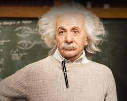 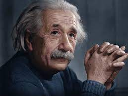
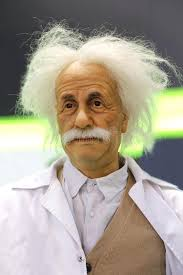
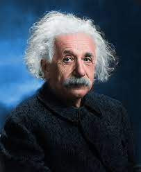
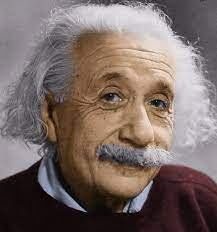
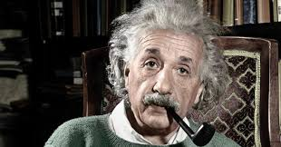
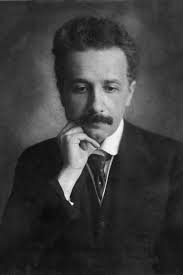
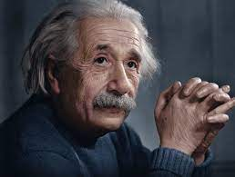
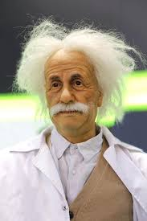
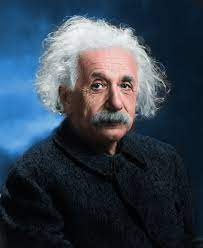
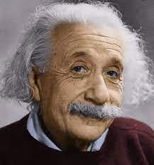
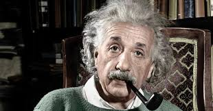
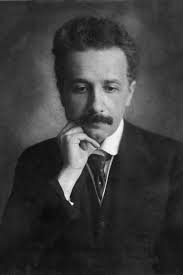
Blogs
His theory of relativity, which he first presented in a series of papers published in 1905, and his equation E=mc2, which he introduced in 1905 as part of his special theory of relativity, are two of Einstein's most famous works. Einstein also wrote about philosophy, politics, and religion, among other things. "Why Socialism?" is one of his most well-known works. (1949), "The World as I See It" (1934), and "Religion and Science" (1934). While Einstein never had a blog, many of his writings and speeches have been collected into books and are widely available for reading and study.